Thanksgiving is one of those holidays that feels made for crafting. The warm colors, the cozy atmosphere, and all the fun themes give you so much to work with. This list of thanksgiving paper crafts covers everything from quick activities for toddlers to slightly more involved projects for older kids. All you need is construction paper, a little glue, and a free afternoon. 🍂
What You'll Need
These basics cover most of the 20 ideas below. Stock up before you start and you will be ready to jump from one project to the next without stopping.
- Construction paper in fall colors, orange, brown, yellow, and red cover almost every project on this list.
- White cardstock, sturdier than regular paper and great for turkeys, bookmarks, and anything that needs to hold its shape.
- Elmer's Disappearing Purple Glue Sticks, the purple tint helps kids see where they have applied glue, which cuts down on frustrated re-dos.
- Googly eyes, self-adhesive ones make turkey faces and animal crafts much easier for little hands.
- Child-safe scissors, one pair per child keeps things moving smoothly.
- Markers or crayons, for drawing faces, feather details, and any finishing touches.
- Tape or string, useful for mobiles, garlands, and anything that will be hung up.
20 Thanksgiving Paper Craft Ideas
1. Paper Turkey Handprint Card
Trace your child's hand on brown construction paper, cut it out, and flip it so the fingers point upward like turkey feathers. Glue on two googly eyes, a small orange triangle beak, and a red paper wattle. Write "Happy Thanksgiving" inside a folded card base and stick the turkey on the front. Grandparents absolutely love receiving these, and toddlers can do most of it with just a little help from you.
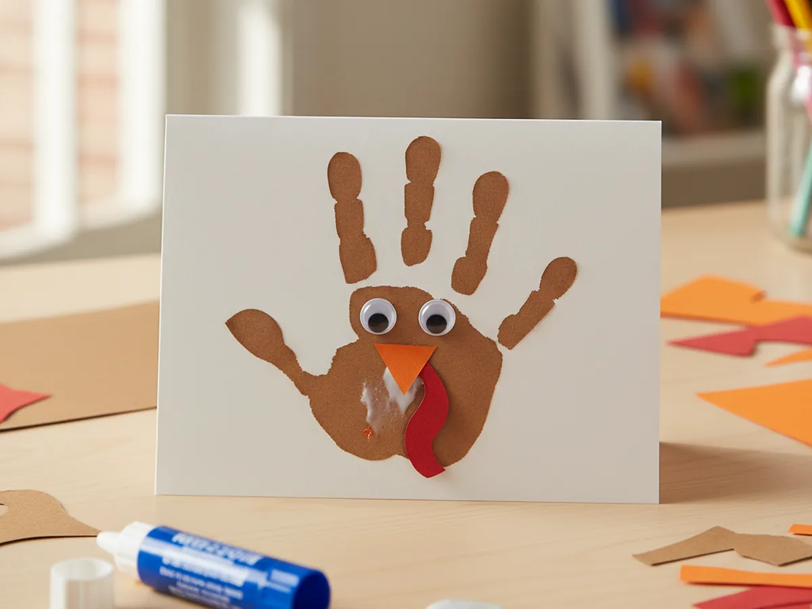
2. Thankful Tree Wall Art
Cut a large bare tree trunk and branch shape from brown construction paper and tape it to the wall. Then cut out leaf shapes in orange, red, and yellow and let each family member write one thing they are thankful for on each leaf. Add more leaves every day leading up to Thanksgiving for a display that grows throughout the season. Kids love coming back to read what everyone has written.
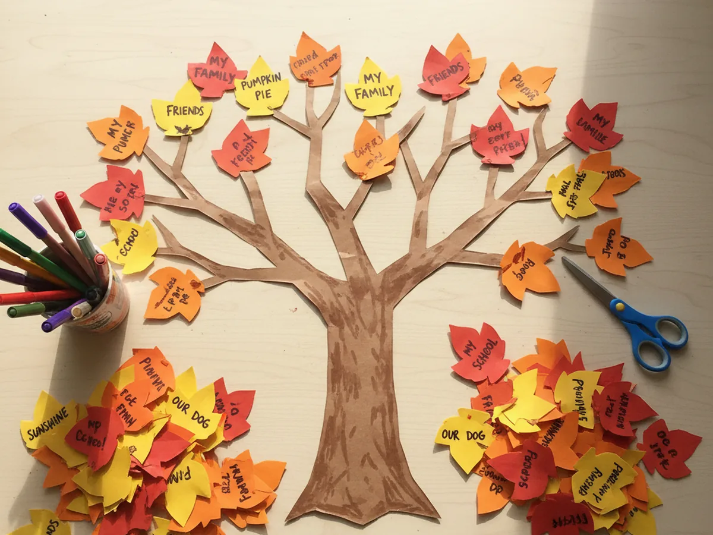
3. Accordion Fan Paper Turkey
Fan-fold a long strip of colorful construction paper and pinch it at one end to make the tail feathers. Attach a small brown cardstock circle for the body and add a tiny head with googly eyes, an orange beak, and a red wattle. Stand it upright on the table by curling the bottom of the body into a small base. This is one of the most popular thanksgiving paper crafts for kids because it comes together fast and looks impressive on the dinner table.
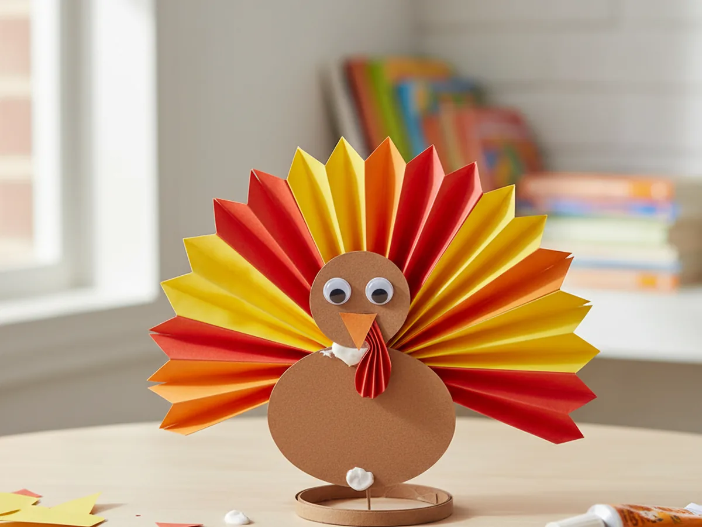
4. Paper Cornucopia
Roll a large piece of brown construction paper into a cone shape and tape it closed. Crumple small pieces of orange, red, yellow, and green paper into loose ball shapes representing fruits and vegetables, then tuck them into the open end of the cone. The result looks like a miniature harvest horn of plenty that makes a charming Thanksgiving centerpiece. Kids can get creative deciding what goes inside the cornucopia.
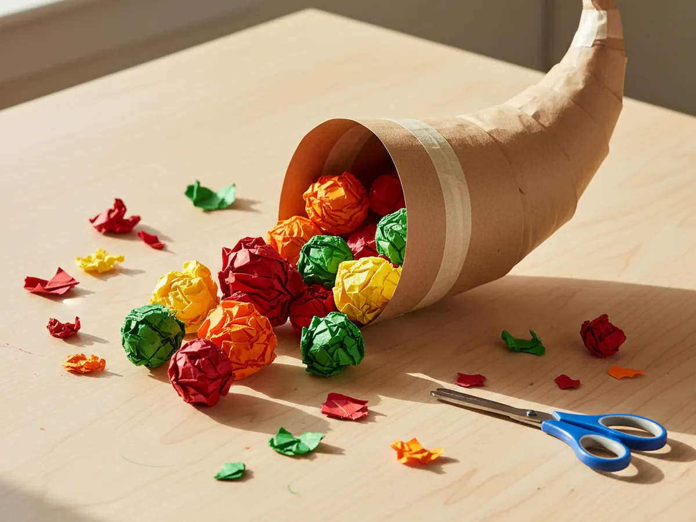
5. Pilgrim Hat Paper Craft
Cut a tall rectangle from black construction paper and curl it into a cylinder for the hat brim. Cut a wide flat circle with a hole in the center for the brim and attach the cylinder on top. Add a white paper band and a yellow paper buckle around the middle. This classic thanksgiving paper craft is great for kids who enjoy a bit of cutting and assembling, and the finished hat looks festive displayed on a table or bookshelf.
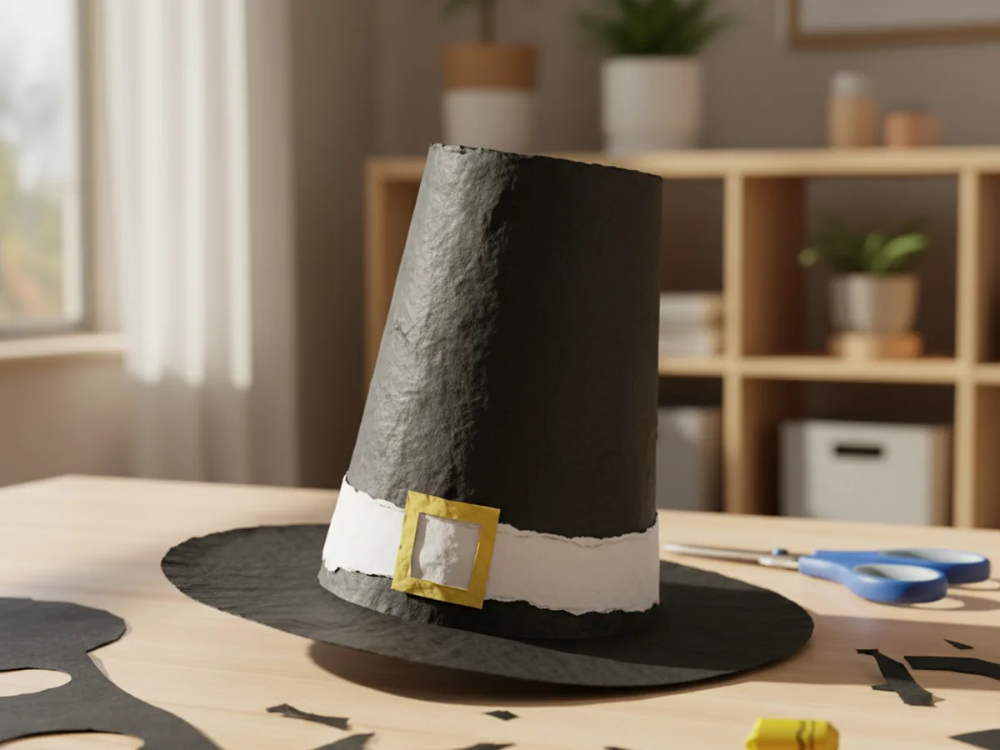
6. Paper Feather Garland
Cut feather shapes from orange, red, yellow, and brown construction paper and let your child decorate each one with markers or crayon lines for the quill details. Punch a small hole near the base of each feather and thread them onto a length of string or yarn to make a garland. Hang it across a window or along a mantel for a simple and warm fall decoration. 🍁
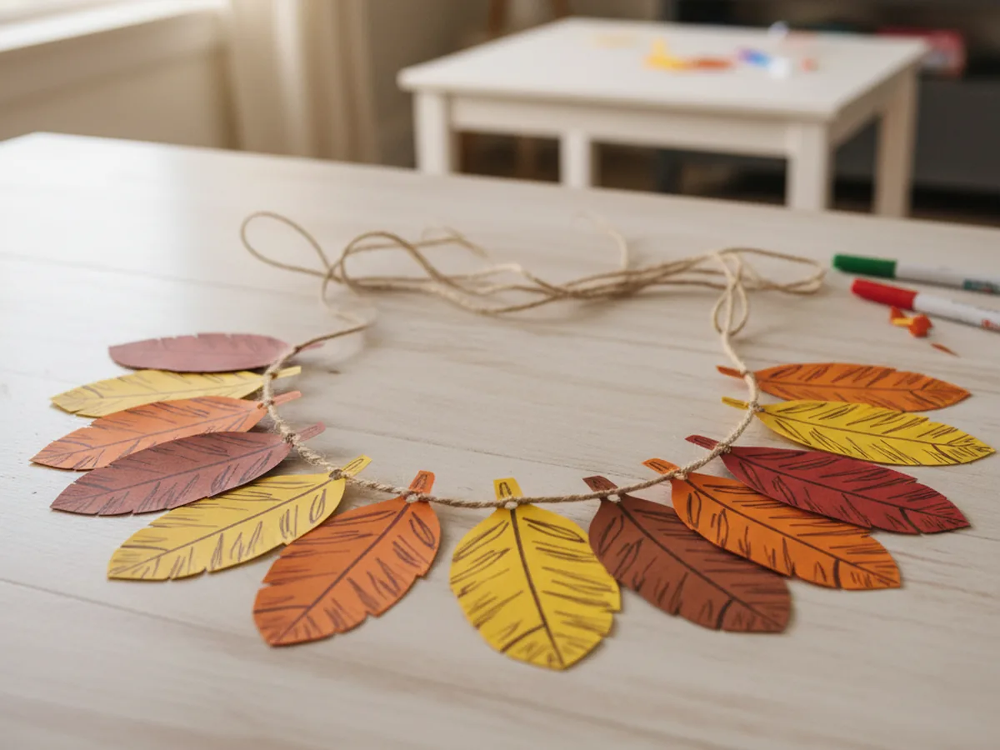
7. Construction Paper Corn
Cut a long oval shape from yellow or orange paper for the corn cob. Then cut small squares in yellow and orange shades and glue them in neat rows covering the cob, like kernels. Add two green husk shapes on either side. This is a surprisingly satisfying craft because filling in all those little squares gives kids a calming, focused activity, and the finished corn looks very realistic on a Thanksgiving table.
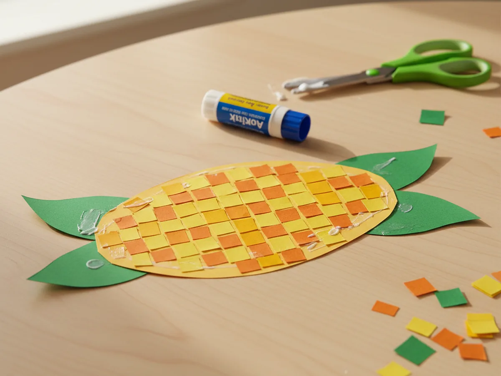
8. Paper Acorn Bookmark
Cut a rounded acorn cap shape from brown construction paper and a teardrop-shaped acorn body from tan or orange paper. Glue them together onto a thin cardstock strip that fits snugly over a page corner. Add a small curly stem at the top and draw texture lines on the cap with a brown marker. These little bookmarks make sweet thanksgiving paper crafts that kids can give as gifts to teachers or family members.
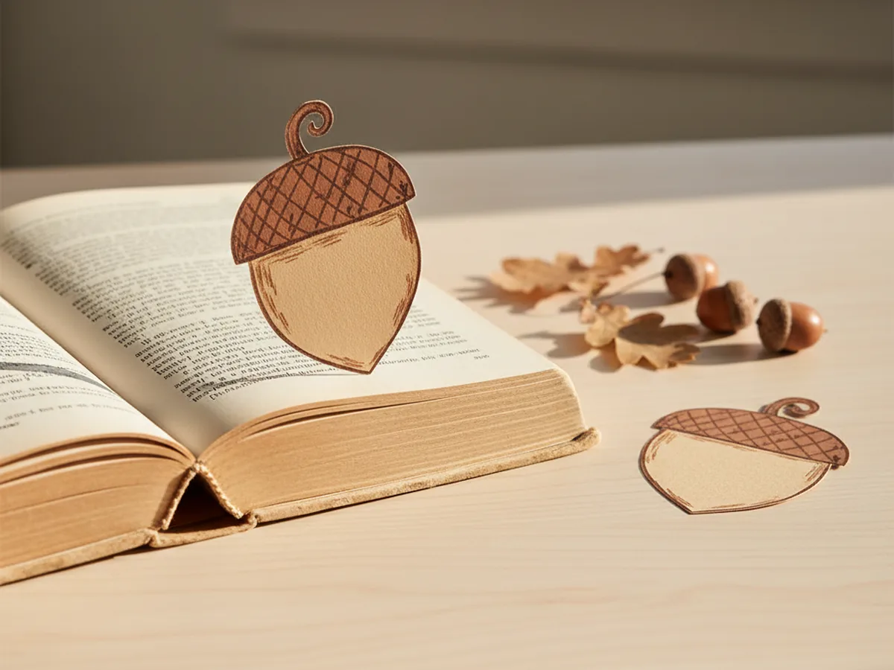
9. Paper Leaf Crown
Cut a long strip of brown or orange cardstock to fit around your child's head, then cut out leaf shapes in fall colors and glue them all around the band. Let kids choose their own colors and overlap the leaves for a full, layered look. Staple the band ends together once it fits and they have a wearable crown perfect for wearing at the Thanksgiving dinner table. Toddlers can do the gluing while you handle the cutting and fitting.
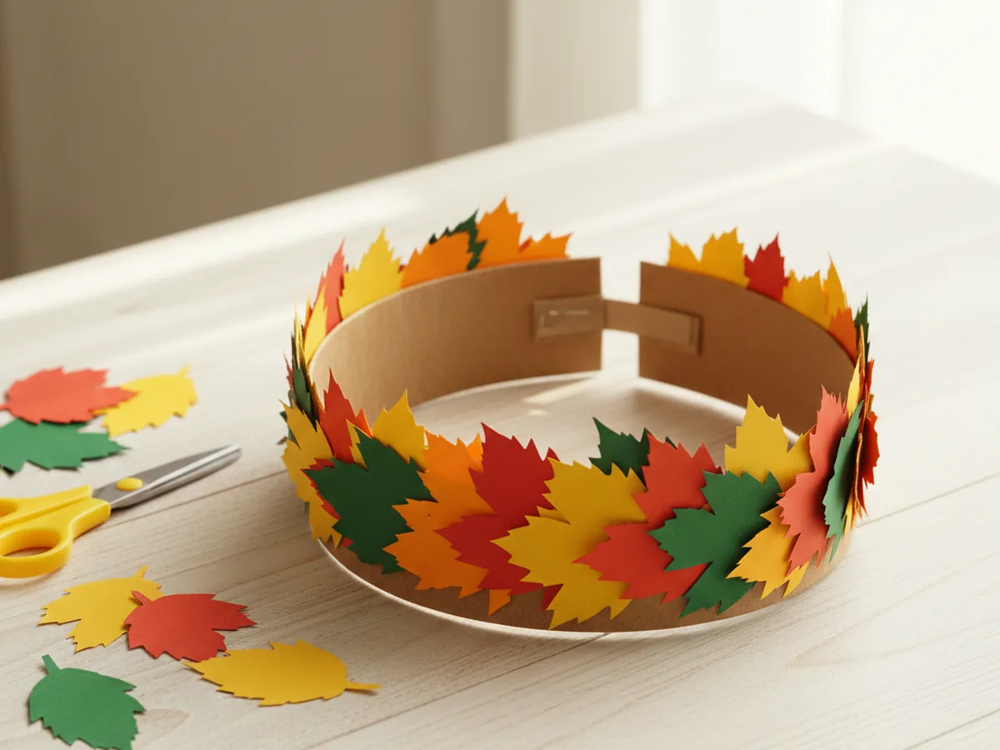
10. Paper Pumpkin Lantern
Roll a sheet of orange construction paper into a cylinder and tape the ends. Cut vertical slits from near the top to near the bottom all the way around, then gently push the top and bottom inward so the strips bow out into a pumpkin shape. Add a short green paper strip for the stem and use a small battery tea light inside for a glowing centerpiece. The puffed-out shape surprises kids every time they push the paper in.
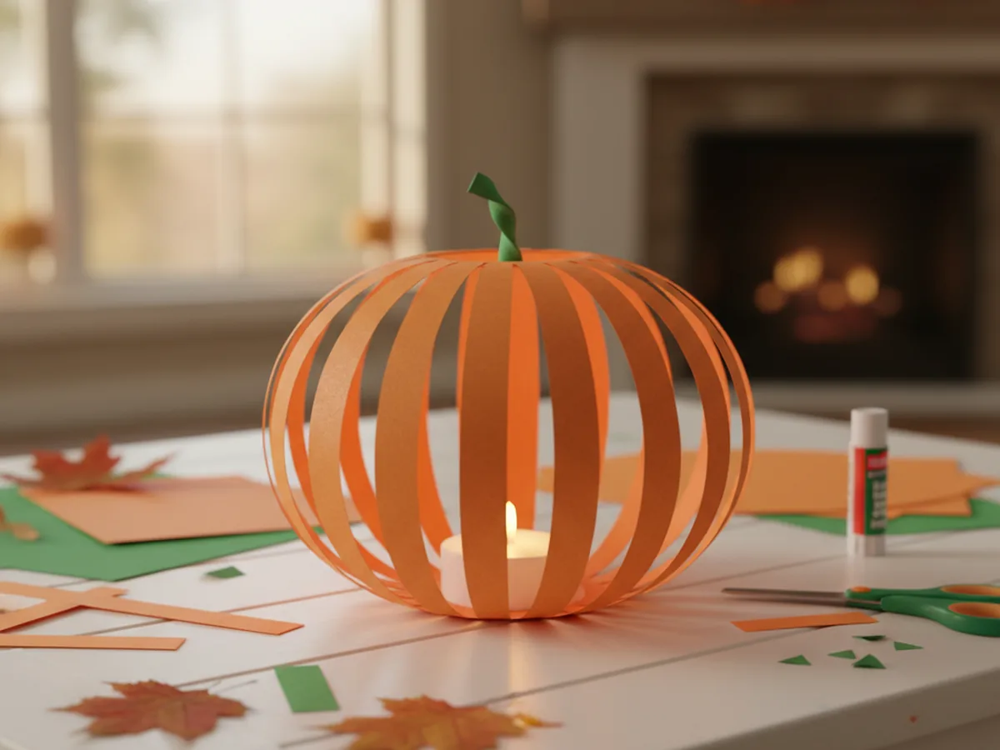
11. Paper Turkey Bookmark
Fold a square of brown cardstock in half diagonally to make a triangle, then fold the two side corners up to create a pocket that grips a page corner. Draw on googly eyes, glue on an orange beak and a red paper wattle, and fan out colored paper strips from the top as feathers. These corner bookmarks are one of the easiest thanksgiving paper crafts for kids to make in a big batch when you have a classroom or family gathering.
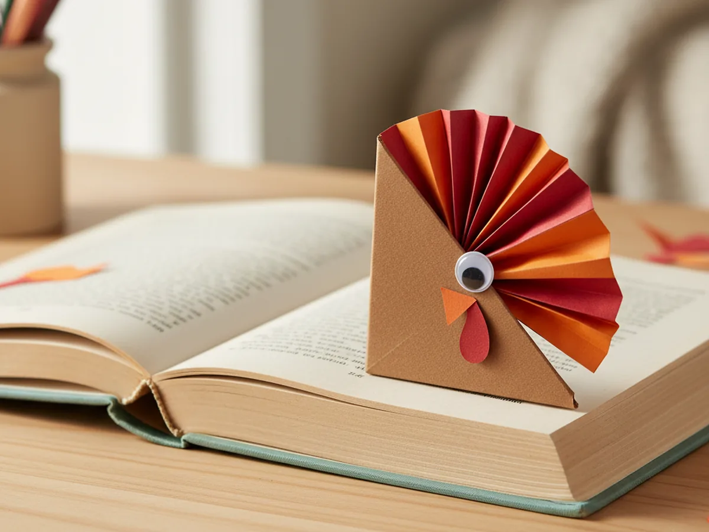
12. Paper Scarecrow
Layer paper shapes to build a scarecrow: a straw hat cut from brown paper, a patchy flannel-style shirt cut from plaid-colored paper, trouser shapes in dark blue or brown, and thin yellow paper strips as straw poking out from the hat, sleeves, and cuffs. Mount the whole figure on a craft stick or tape it to the wall. Kids love giving the scarecrow a personality with a marker-drawn face and a goofy grin.
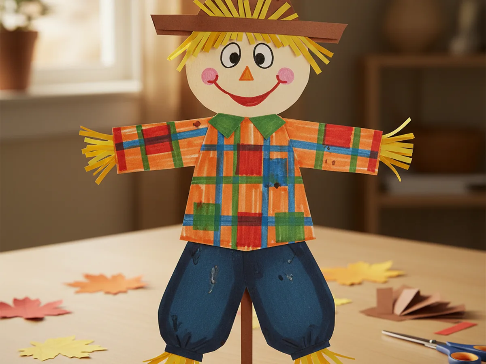
13. Woven Paper Placemat
Cut a sheet of orange construction paper with parallel slits across the middle, leaving the edges intact to form a frame. Then weave strips of yellow, brown, and red paper in and out through the slits to create a colorful woven pattern. Tape or glue the ends on the back to hold everything in place. The placemats are sturdy enough to actually use at the Thanksgiving table, which makes the whole craft feel extra meaningful.
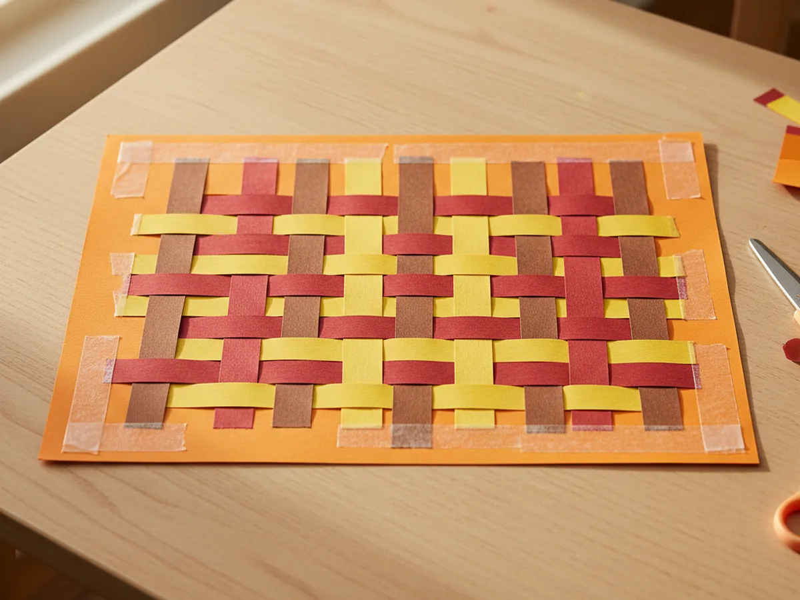
14. Turkey Paper Chain
Cut strips of brown, orange, and red construction paper and link them into a chain garland, the same way you would make a Christmas paper chain. Every few links, add a small turkey head cut from orange paper with a googly eye and a tiny beak. Drape the finished chain across a mantel or along a table edge for an easy and cheerful Thanksgiving decoration that kids can make almost entirely on their own.
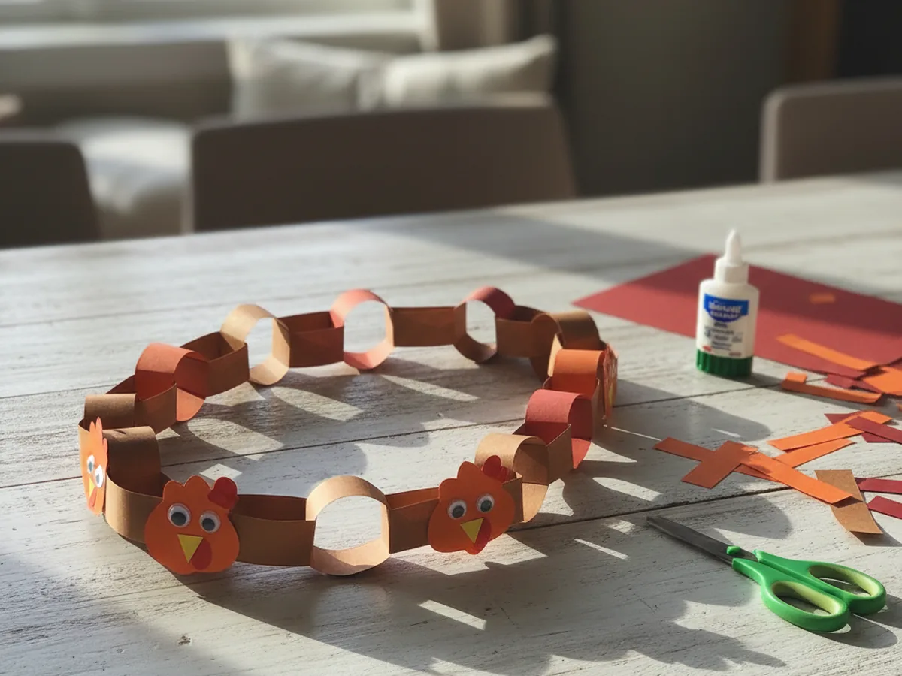
15. Paper Leaf Wreath
Cut a large ring from a piece of cardstock or fold a piece of brown construction paper into a thick ring shape. Then cut dozens of leaf shapes in fall colors and glue them all over the ring, overlapping and layering them for a full, lush look. Add a ribbon loop at the top for hanging. This wreath is one of those thanksgiving paper crafts that looks like it took real effort but is completely doable with kids.
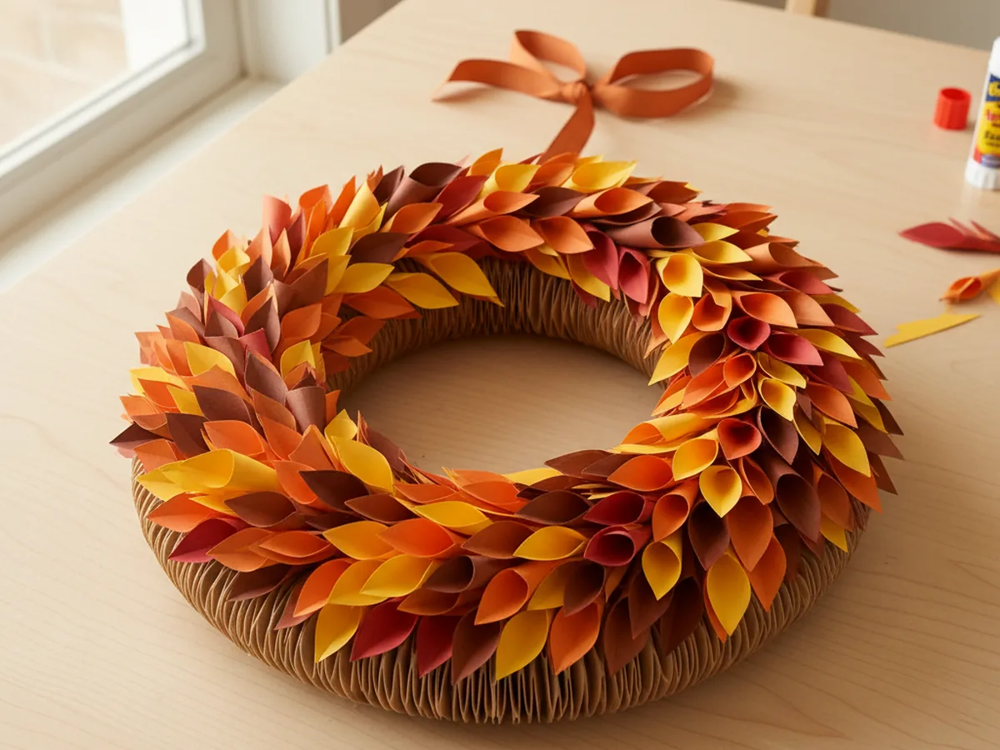
16. Paper Mayflower Boat
Fold a piece of brown construction paper into a simple boat hull shape, then cut a tall mast from a cardstock strip and attach it in the center. Cut a square of white paper into a sail and glue it to the mast. Float it in a shallow tray of water or display it on a windowsill as a conversation starter about the history behind the holiday. This one is especially fun for kids who love boats and pretend play.
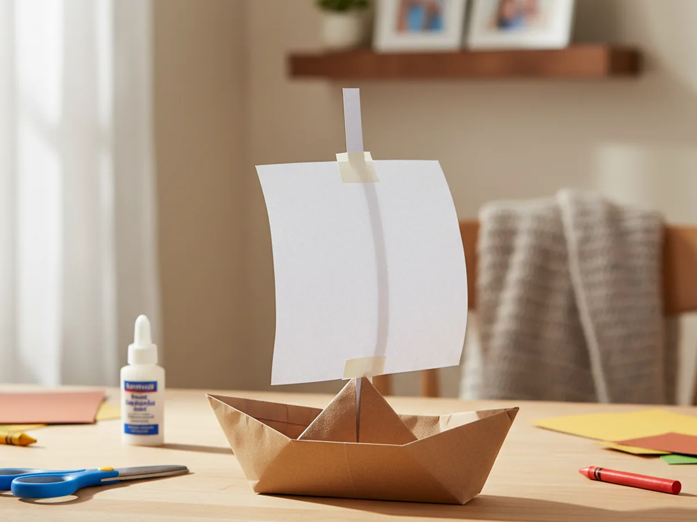
17. Thankful Leaf Mobile
Cut five to eight large leaf shapes from fall-colored paper and write one thing the family is grateful for on each one. Punch a small hole at the top of each leaf and tie them to a short stick or wooden dowel using different lengths of string so they hang at varying heights. Suspend the whole mobile from the ceiling or a doorway for a sweet family display that lasts throughout November.
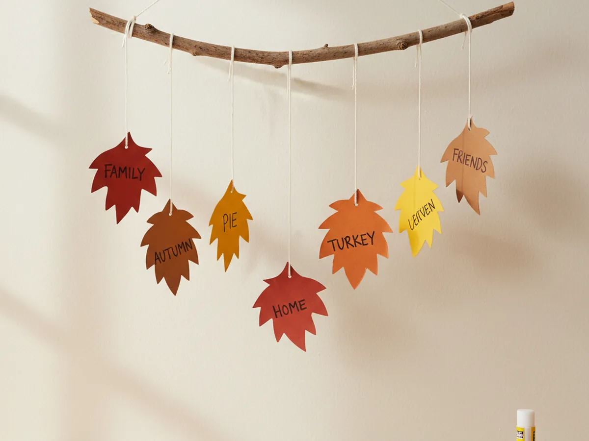
18. Paper Turkey Cup Craft
Roll a piece of brown cardstock into a cone shape for the turkey body. Fan-fold a strip of colorful paper into tail feathers and attach them to the back of the cone. Add a small round head with googly eyes, an orange beak, and a red wattle to the pointed top. The finished turkey stands upright on its own and looks adorable lined up in a row as place card holders at the dinner table. 🦃
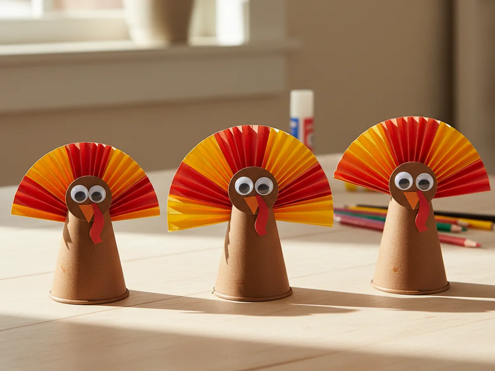
19. Paper Pilgrim Bonnet
Cut a wide oval from white construction paper for the bonnet shape, then fold up the front brim and glue a thin white strip around the sides and back to form the bonnet sides. Add long white ribbon ties cut from paper on each side. It is simple enough for young kids to assemble with help and makes a sweet costume accessory for a Thanksgiving classroom celebration or family photo.
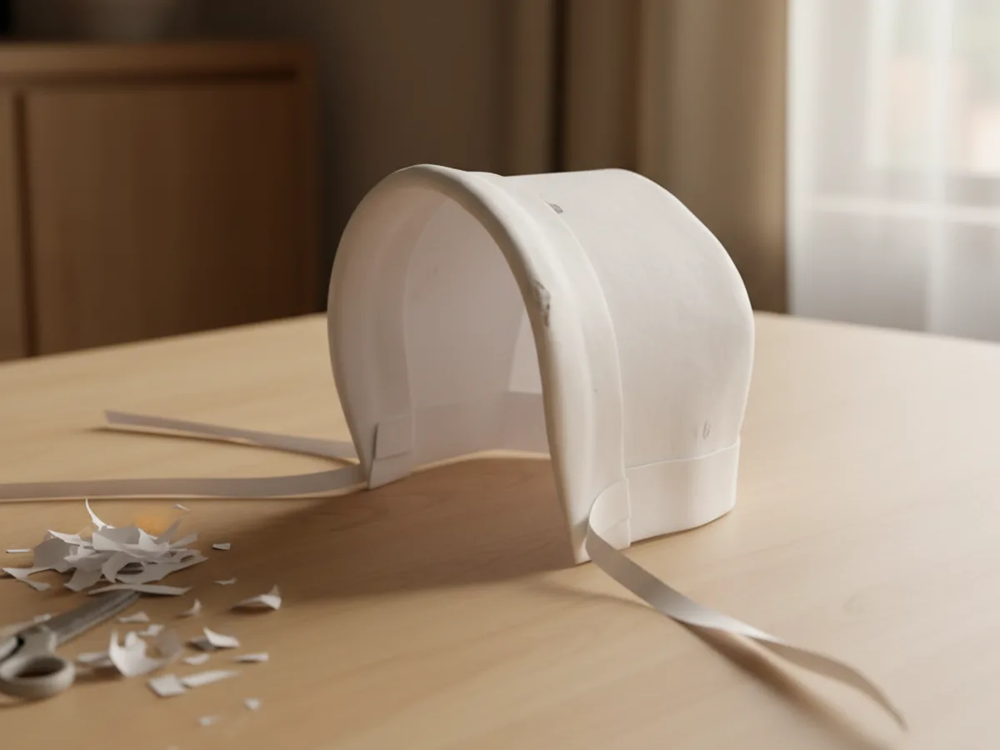
20. Paper Pumpkin
Cut six to eight identical teardrop or petal shapes from orange construction paper. Glue or staple the pieces together at the top and bottom so they fan out into a round pumpkin shape. Add a short twisted green paper strip for the stem and a small curled leaf. These 3D paper pumpkins make the most charming table decorations, and kids feel genuinely proud watching a flat pile of paper turn into something so realistic.
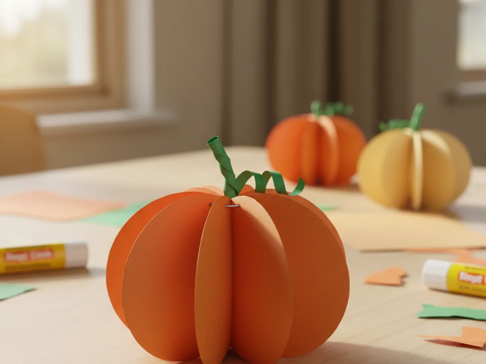
Final Thoughts
Thanksgiving is the perfect holiday for slowing down and making something together. Every one of these thanksgiving paper crafts is designed to feel easy enough to actually enjoy, not just finish. Whether your kids are two or ten, there is something on this list that will make them light up. Pick one or pick five, and enjoy the warm, creative time together.
More Crafts You'll Love
If your family loves crafting in the fall, these articles are full of more ideas to keep the creative momentum going.
Happy crafting, and happy Thanksgiving from our family to yours.